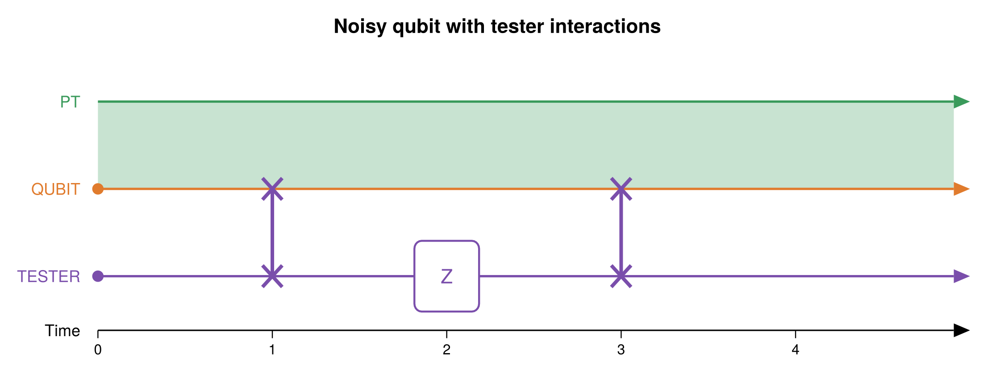
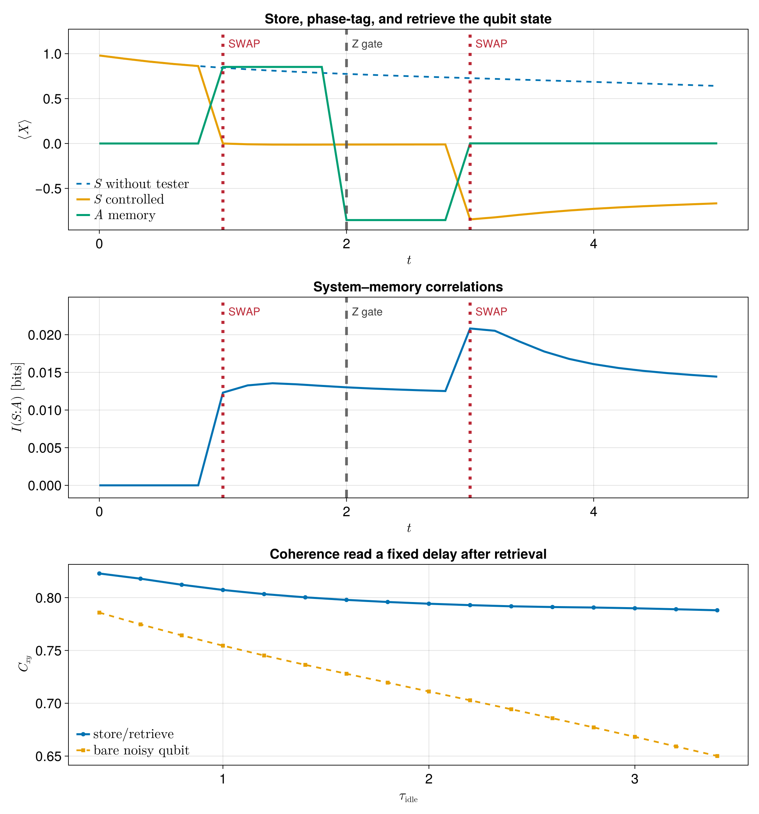

Noisy quantum circuits with a memory-bearing tester
Can an ancillary qubit hold and manipulate a state while its processor remains coupled to a noisy environment? We prepare processor $Q$ in $|+\rangle$, SWAP its state into an isolated ancilla $A$, apply $Z_A$, then SWAP it back. A Tester carries the same ancilla through all three operations; TesterSeq specifies the circuit. The bath process tensor is built only once.

Time runs left to right. Only $Q$ couples directly to the bath; $A$ persists between controls. This is the ideal protocol schematic; the finite-interval convention used for the joint gates is stated beside the schedule below.
scripts/noisy_quantum_circuit_tester.jl runs the larger bath calculation and generates the two-panel result. It reuses a cached process tensor when the bath settings match.
Build the noisy processor process
The processor has no free Hamiltonian. Its pure-dephasing environment is
\[H_B=\sum_k\omega_k b_k^\dagger b_k,\qquad H_{QB}=Z_Q\sum_k g_k(b_k+b_k^\dagger),\qquad J(\omega)=2\alpha\omega e^{-\omega/\omega_c}.\]
Each mode starts in a truncated Gibbs state at $\theta=k_BT/\hbar$. Midpoint quadrature sets $g_k^2=J(\omega_k)\Delta\omega$. Here Z is the Pauli operator with eigenvalues $\pm1$, not Sz. Since $Z^2=I$, the usual static displacement counterterm would be proportional to the identity and is omitted.
using LinearAlgebra
using Logging
using ITensors
using ITensors.Ops: Trotter
using ProcessTensors
N_bath, local_dim = 4, 3
alpha, omega_cutoff, omega_max = 0.008, 4.0, 20.0
thermal_frequency = 2.5
dt, nsteps = 0.15, 14
ace_cutoff, ace_maxdim = 1e-5, 64
processor_sites = siteinds("Qubit", 1)
processor = qubit_system(processor_sites)
rho_Q0 = to_dm(MPS(processor_sites, ["+"]))
Δω = omega_max / N_bath
frequencies = [(k - 0.5) * Δω for k in 1:N_bath]
couplings = sqrt.(2alpha .* frequencies .* exp.(-frequencies ./ omega_cutoff) .* Δω)
bath_sites = siteinds("Boson", N_bath; dim=local_dim)
bath_liouville_sites = liouv_sites(bath_sites)
modes = BosonicMode[]
for k in 1:N_bath
H_mode = OpSum() + (frequencies[k], "N", 1)
coupling = OpSum()
coupling += couplings[k], "A", 1, "Z", 2
coupling += couplings[k], "Adag", 1, "Z", 2
push!(modes, thermal_mode([bath_liouville_sites[k]], H_mode,
thermal_frequency; coupling=coupling))
endThe suppressed size warning concerns joint Dense construction, not this ACE run.
bath = with_logger(() -> bosonic_bath(modes), NullLogger())
process_tensor = build_process_tensor(
processor; environment=bath, dt=dt, nsteps=nsteps,
method=ACE(cutoff=ace_cutoff, maxdim=ace_maxdim, compression=:zipup_cpp),
sys_alg=Trotter{2}(), combine_alg=Trotter{2}(), progress=false,
)14-step ProcessTensor{QubitSystem, BosonicBath} | dt=0.15 | t_final=2.1 | maxlinkdim=39
system: QubitSystem(nsites=1, dissipative=false)
environment: BosonicBath(nmodes=4, D_bath=6561, coupling=true)
core: MPO{Liouville}(length=14, linkdims=[4, 13, 21, …, 3])
Four modes and three oscillator levels keep this calculation small; its final snapshot is at $t=1.95$. The companion figure uses 24 modes, three levels, $dt=0.2$, and $t=5$. Both require convergence checks before quantitative use, particularly the local oscillator cutoff at finite temperature. Neither is a calibrated model of particular hardware.
Program the persistent ancilla
The ancilla starts in $|0\rangle$. It has no free evolution or direct bath coupling here. A tester retains its state across interventions, whereas a sequence of unrelated system-only operations would not carry that memory.
ancilla_sites = siteinds("Qubit", 1)
rho_A0 = to_dm(MPS(ancilla_sites, ["0"]))
memory = tester(ancilla_sites, rho_A0)
store_step, phase_step, retrieve_step = 4, 7, 10
swap_gate = op("SWAP", only(processor_sites), only(ancilla_sites))
phase_gate = op("Z", only(ancilla_sites))
controls = TesterSeq(nsteps=nsteps)
add!(controls, joint_unitary(swap_gate, processor_sites, ancilla_sites), store_step)
add!(controls, tester_unitary(phase_gate, ancilla_sites), phase_step)
add!(controls, joint_unitary(swap_gate, processor_sites, ancilla_sites), retrieve_step)TesterSeq(default=TesterIdentity, nsteps=14, 3 explicit entries)
tstep=4 => JointUnitary
tstep=7 => TesterUnitary
tstep=10 => JointUnitaryA joint gate $G$ is compiled by applying $G^{1/2}$ before and after the noisy process interval. It is therefore not an instantaneous SWAP outside the bath dynamics. Tester-only gates act on the ancilla wire. Schedule step k corresponds to snapshot k, labelled (k-1)*dt by evolve.
trajectory = evolve(process_tensor, rho_Q0; tester=memory, tester_seq=controls,
return_joint=true, progress=false);
println((element_type=eltype(trajectory.states_liouville),))
println(sprint(show, foldl(*, last(trajectory.states_liouville))))(element_type = MPS{Liouville},)
ITensor ord=1
Dim 1: (dim=4|id=610|"Liouv,n=1,ptype=Qubit,tstep=13")
NDTensors.Dense{ComplexF64, Vector{ComplexF64}}
4-element
0.5061139727674467 - 3.311424447237698e-16im
-0.46042022703174446 - 0.054417094170085195im
-0.4604202270317428 + 0.05441709417008853im
0.49384678933145687 - 1.8488064889462433e-16im
Two short reference contractions reuse the same process: no ancilla, and an idle ancilla. The second must leave the processor's reduced trajectory unchanged.
baseline = evolve(process_tensor, rho_Q0; progress=false);
spectator = evolve(process_tensor, rho_Q0; tester=memory, progress=false);Read local signals and joint correlations
return_joint=true supplies $\rho_{QA}$ as well as both reduced states. We track $\langle X_Q\rangle$, $\langle X_A\rangle$, and
\[I(Q{:}A)=S(\rho_Q)+S(\rho_A)-S(\rho_{QA}),\]
with entropy in bits. The lower panel of the companion figure is this mutual information. The two small helpers convert these one- and two-qubit outputs and check their suitability for entropy evaluation.
function density_matrix(state)
sites = [only(filter(i -> plev(i) == 0, pair)) for pair in siteinds(state)]
tensor = foldl(*, state)
d = prod(dim.(sites))
return reshape(ComplexF64.(Array(tensor, prime.(sites)..., sites...)), d, d)
end
function entropy_diagnostics(ρ; tolerance=1e-7)
z = tr(ρ)
isfinite(z) && real(z) > 1e-12 || error("Invalid density-matrix trace")
hermiticity_error = norm(ρ - ρ') / norm(ρ)
λ = eigvals(Hermitian((ρ + ρ') / (2real(z))))
min_eigenvalue = minimum(λ)
valid = min_eigenvalue >= -tolerance && hermiticity_error <= tolerance
entropy = NaN
if valid
p = max.(λ, 0) # Only negativity within the declared tolerance is clipped.
p ./= sum(p)
entropy = -sum(x * log2(x) for x in p if x > 0)
end
return (; entropy, min_eigenvalue, hermiticity_error, trace_error=abs(z - 1), valid)
end
rho_Q = density_matrix.(trajectory.states_hilbert)
rho_A = density_matrix.(trajectory.tester_states_hilbert)
rho_QA = density_matrix.(trajectory.joint_states_hilbert)
rho_baseline = density_matrix.(baseline.states_hilbert)
rho_spectator = density_matrix.(spectator.states_hilbert)
spectator_error = maximum(norm.(rho_spectator .- rho_baseline))
@assert spectator_error < 1e-8
X = ComplexF64[0 1; 1 0]
x_Q = [real(tr(X * ρ) / tr(ρ)) for ρ in rho_Q]
x_A = [real(tr(X * ρ) / tr(ρ)) for ρ in rho_A]
x_baseline = [real(tr(X * ρ) / tr(ρ)) for ρ in rho_baseline]
Q_data, A_data, QA_data = entropy_diagnostics.(rho_Q), entropy_diagnostics.(rho_A), entropy_diagnostics.(rho_QA)
information = [q.entropy + a.entropy - qa.entropy for (q, a, qa) in zip(Q_data, A_data, QA_data)]
checks = vcat(Q_data, A_data, QA_data)
println((identity_tester_error=spectator_error, max_trace_error=maximum(c.trace_error for c in checks),
minimum_eigenvalue=minimum(c.min_eigenvalue for c in checks),
max_hermiticity_error=maximum(c.hermiticity_error for c in checks)))(identity_tester_error = 5.992713765460733e-16, max_trace_error = 6.875744243950432e-5, minimum_eigenvalue = -3.0358974324028536e-18, max_hermiticity_error = 6.382733096821544e-15)
The three selected snapshots report the same quantities as the figure: $\langle X_Q\rangle$, $\langle X_A\rangle$, and $I(Q{:}A)$.
for (event, k) in zip((:store, :phase, :retrieve), (store_step, phase_step, retrieve_step))
println((event=event, time=trajectory.times[k], x_Q=x_Q[k], x_A=x_A[k],
mutual_information=information[k]))
end
@assert all(isfinite, x_Q) && all(isfinite, x_A)(event = :store, time = 0.44999999999999996, x_Q = -3.392826280041996e-6, x_A = 0.9100415523939779, mutual_information = 0.012475489241393078)
(event = :phase, time = 0.8999999999999999, x_Q = -0.010682787295132203, x_A = -0.9100408556884286, mutual_information = 0.012764584997965955)
(event = :retrieve, time = 1.3499999999999999, x_Q = -0.9305765003772971, x_A = 0.0009750764266136135, mutual_information = 0.018563890571899444)
The helper reports raw trace drift, the relative Hermiticity defect, and the smallest eigenvalue of the normalised Hermitian part before clipping. Only negative eigenvalues within 1e-7 are treated as numerical roundoff; larger violations produce NaN, not a plausible-looking entropy. This tolerance should be checked alongside timestep and ACE convergence.
Interpret the storage experiment

In the upper panel, the uncontrolled processor gradually loses its transverse signal. The first SWAP transfers most of that signal to the ancilla, where it is nearly constant during storage. The $Z_A$ gate reverses its sign; the second SWAP returns the negative signal to $Q$. Its magnitude then decreases again under the same bath process.
The lower panel shows the small processor–ancilla correlations generated by this finite-interval protocol. Mutual information measures total correlations; it does not certify entanglement or non-Markovianity. In particular, the ideal instantaneous first SWAP would leave $Q$ in $|0\rangle$, initially factorised from the ancilla and bath. Noise acting between the two half-SWAPs changes that idealisation and can generate the nonzero correlations seen here.
The bath can remain correlated with the stored state even though it does not directly couple to $A$. The controlled ancilla and the uncontrolled bath thus play different roles: the bath is represented by the fixed process tensor, while the ancilla is carried explicitly through the chosen tester circuit.
These edits test the sign of $\langle X\rangle$ and the mutual information under the finite-interval gate convention, while reusing the same bath process whenever its parameters stay fixed.
- Replace
ZbyId: the stored X signal should no longer change sign. - Move the retrieval step later, keeping all three operations ordered. Follow where the local X signal resides before and after retrieval.
- Reduce
dt, rebuilding the PT and adjusting all step indices to keep the physical gate times fixed. Does the small mutual information change as the noise interval between the half-gates becomes shorter?